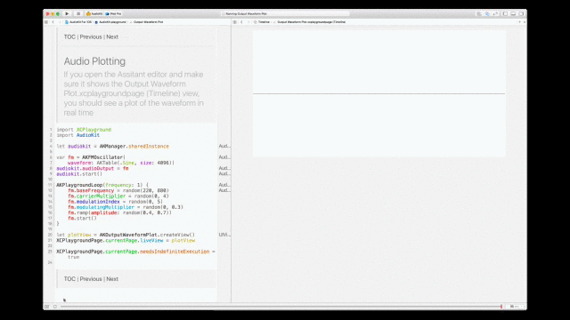
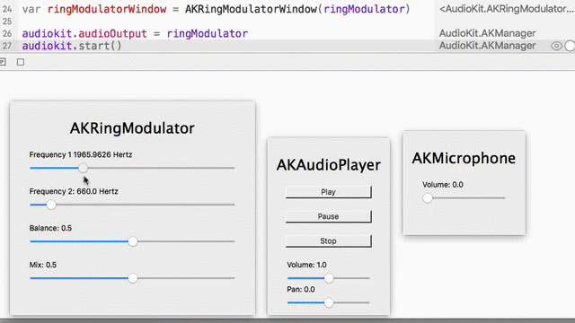

Playgrounds are a means to develop audio applications with immediate aural and visual feedback about what you are creating. Gone are the days of program-compile-listen-and-reprogram. Not only can you develop quickly, but you can stumble upon amazing sounds along the way. Truly, you're learning to play an instrument, and that instrument is AudioKit code. As you can tell, we're super excited about how this will help developers create amazing things.
There are over 100 playgrounds included with AudioKit! The playgrounds come in two flavors, iOS, and OSX, because the playgrounds for each OS have different capabilities. OS X Playgrounds have the ability to spawn windows with sliders for instance. On the other hand, many processing and generation nodes don't work in OS X, so there is a trade-off.
iOS Playgrounds |
OSX Playgrounds |
NO INSTALLATION REQUIRED. These are simply Xcode playgrounds that are part of the AudioKit source project. But, you do need to download the source code as opposed to the precompiled framework and you need to build AudioKit. All this is shown in the video below: